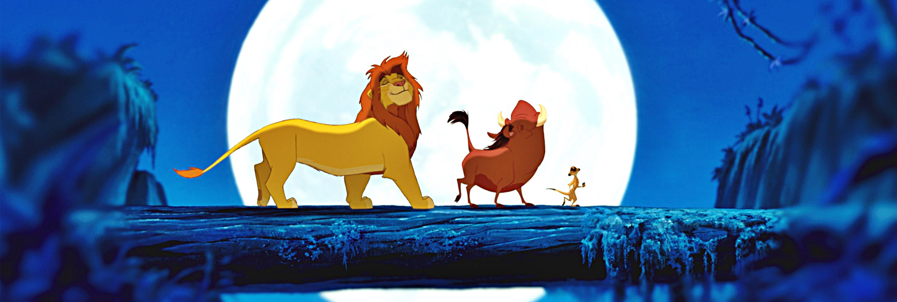

Producción
Antecedentes y redacción del guion

La trama de El rey león surgió a finales de 1988, en una conversación entre Jeffrey Katzenberg, Roy E. Disney y Peter Schneider mientras volaban a Europa para promocionar Oliver y su pandilla. Al discutir la posibilidad de que la historia estuviera ambientada en África, Katzenberg se sintió enganchado de inmediato al proyecto. Charlie Fink, vicepresidente de asuntos creativos de Walt Disney Feature Animation, continuó desarrollando el concepto, y Katzenberg fue agregando temáticas como la mayoría de edad y la muerte, y ciertas anécdotas personales relacionadas con su irregular carrera política. De acuerdo a este último: «Es acerca de la responsabilidad que todos tenemos como portadores de la antorcha de una generación a la siguiente. Para cualquier ser humano, se trata de un momento especial cuando pasas de ser un niño a un adulto y [entonces] debes asumir la responsabilidad que eso conlleva. Para la mayoría de la gente esto es un momento de júbilo tal y como encontrar a la pareja de tu vida o el nacimiento de un hijo. A veces, como ocurre con Simba, esto es ocasionado por algo trágico. Él tiene que afrontarlo de esa manera y crecer en el proceso. Así tengas 5 u 85 años, es algo con lo que todos pueden sentirse relacionados instintivamente o por experiencia propia».
Para noviembre del mismo año, Thomas Disch —autor de El valiente tostadorcito— había terminado un tratamiento titulado King of the Kalahari —traducción: «El rey del Kalahari»— aunque luego Linda Woolverton estuvo revisando el guion durante el siguiente año, etapa en la que el documento fue renombrado primero a King of the Beasts —traducción: «El rey de las bestias»— y luego a King of the Jungle —traducción: «El rey de la selva»—. La versión original de la película era muy distinta a lo que acabó siendo la versión definitiva: el argumento estaba centrado en batallas entre leones y babuinos; Scar era el líder de los simios, Rafiki era un guepardo, y Timón y Pumba eran los amigos de la infancia de Simba. Simba tampoco abandonaba el reino, sino que llegaba al trono como «un personaje vago y descuidado» debido a las manipulaciones de Scar, motivo que habría de conducirlo a su derrocamiento. En 1990, el productor Thomas Schumacher, que recién había concluido su trabajo en The Rescuers Down Under, se integró al equipo y consideró que el libreto de El rey de la jungla era adecuado para «un documental animado especial de National Geographic».
Disney eligió inicialmente a George Scribner, responsable de Oliver y su pandilla, para dirigir El rey de la selva junto con Roger Allers, principal involucrado en el guion de La bella y la bestia. Allers integró a Brenda Chapman para que se encargara de la trama. Con tal de tener una mejor apreciación del entorno en que habría de estar ambientada la película, el equipo de producción acudió a Kenia para visitar el parque nacional de Hell's Gate. No obstante, debido a diferencias creativas entre Scribner y el resto del equipo —por ejemplo, Allers quería que fuese un musical mientras que Scribner tenía en mente un documental centrado en la naturaleza—, el director renunció al proyecto seis meses después, siendo reemplazado por Rob Minkoff. Otros cambios incluyeron la incorporación del productor Don Hahn, mientras que Schumacher pasó a ser productor ejecutivo ante su nuevo nombramiento como vicepresidente para el desarrollo y la animación de largometrajes de Disney. En opinión de Hahn, el guion carecía de una idea clara hasta ese momento, así que propuso que la temática principal lidiara con «dejar atrás la infancia y encarar las realidades del mundo», idea que se sometió a la revisión de los guionistas. Allers, Minkoff, Chapman y Hahn reescribieron la trama basándose en este concepto a lo largo de dos semanas de reuniones con los directores Kirk Wise y Gary Trousdale, que recién habían terminado su trabajo en La bella y la bestia. Fue en esta etapa que el guion acabó titulándose El rey león y el escenario principal dejó de ser la selva, para ser ahora la sabana.
El rey león fue la primera película animada de Disney en contar con una historia original, en contraste a las anteriores producciones del estudio que consistían en adaptaciones de obras ya existentes. Contó con rasgos de los personajes bíblicos José y Moisés, así como de Hamlet de William Shakespeare. Los guionistas Irene Mecchi y Jonathan Roberts se integraron al equipo a mediados de 1992, y se encargaron principalmente de revisar el libreto, resolver temas emotivos dudosos y resaltar la comicidad de Pumba, Timón y las hienas. El letrista Tim Rice colaboró estrechamente con los guionistas, y volaba a California al menos una vez al mes debido a que sus canciones necesitaban estar a la par de la continuidad narrativa. Si bien las letras de sus canciones sufrieron modificaciones al término de la producción, estas fueron agregadas a los guiones gráficos durante las fases iniciales de desarrollo. De manera similar, el guion pasó por constantes ediciones provocando que ciertas escenas fuesen animadas en más de una ocasión debido a cambios en el diálogo, por ejemplo.